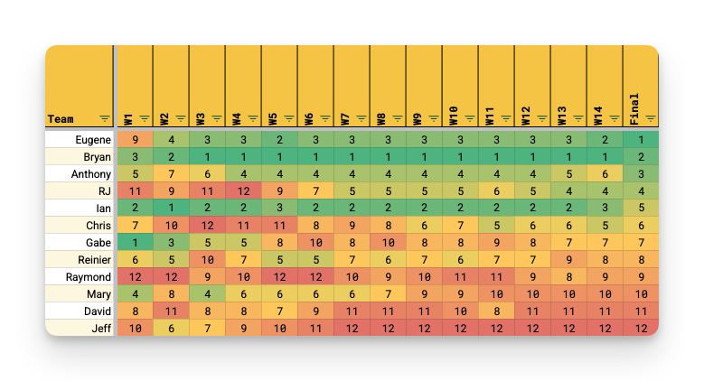
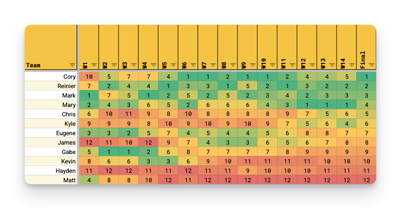
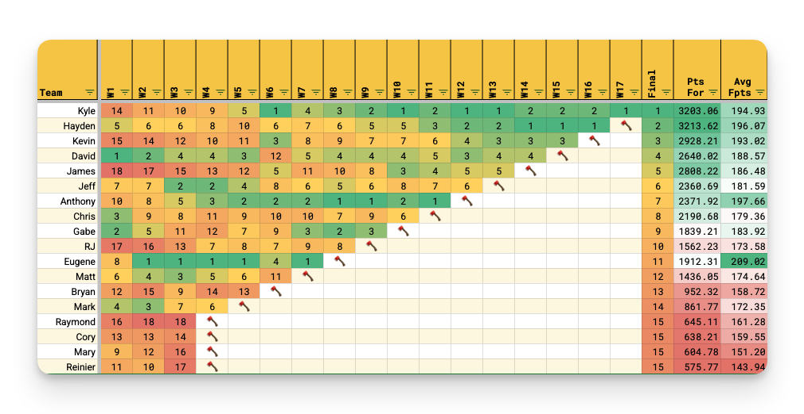

📈 Promoted to Prime
Chris
Season-specific highlights, awards, and statistical records from the original Benchmark record book.
Chris
Kyle

Eugene
Runner-up: Bryan
Jeff
Runner-up: David
RJ
The defending champ started the season at 11th, and fell as low as 12th in week 4, but finished the season in 4th place after going on a 9-win streak.
Bryan
Led the league with 3207.12 points, 236.22 points more than last season's highest scorer. Second was Ian with 3094.57. Third was Eugene with 3035.91.
Reinier
Came in with 2647.53 points, 229.46 more than last year's lowest scorer. Next lowest was David with 2660.41.
Bryan, Chris & Eugene
3 weeks each with the highest score. Next highest was 1, which David, Gabe, Ian, Raymond & RJ all achieved.
Raymond
4 weeks with the lowest score. Mary had 3 weeks.
Ian
Scored 290.03 points in week 16, an all-time league record. Next highest was RJ with 279.04 in week 7, then Eugene with 265.15 in week 4.
David
Only scored 115.66 points in week 17. Next lowest was Mary's 133.62 in week 8, then Gabe's 141.04 in week 5.
Bryan
Jonathan Taylor gave him 61.10 points in week 10. Second was Jahmyr Gibbs giving Mary 57.15 in week 12. Then Trevor Lawrence giving Anthony 53.75 in week 15. All 3 were drafted by their managers.
Eugene
The Vikings gave him 46.45 points in week 3. Second, Bryan got 35.72 from the Seahawks in week 10. Third, Raymond got 34.52 points from the Browns in week 7.
Bryan
12 wins in a row between weeks 1 and 6. RJ was next with a 9-win streak from weeks 5 and 9.
Jeff
15 losses in a row between weeks 3 and 10. Next worst streak was 6 losses, held by Chris and Raymond.
RJ
Scored the 5th most points but had the easiest schedule with 2713.26 points against. This was 23.96 points fewer than the next easiest schedule— Anthony at 2737.22. Gabe had 2754.04, then Raymond had 2781.16.
Jeff
An all-time record 3067.01 points against— 61.88 points higher than last year's record points against. This is also 116.51 more than the next hardest schedule of 2950.50 points against for David. Mary had 2909.09, then Ian had 2881.75.
Bryan & Eugene
10 matchup wins each. Chris, Gabe, Ian & RJ were next with 8 matchup wins each.
Jeff
Only 3 matchup wins. David, Mary & Raymond were next with 5 matchup wins each.
Eugene
Dominated David by a record 108.98 points in Week 7. Next was Ian besting Anthony by 95.21 points in week 8, then Gabe beating Reinier by 86.58 in week 12.
Chris
Edged out Ian by 1.6 points in week 11. Next closest was Anthony winning by 2.81 against Eugene in week 1, then Eugene winning by 4.63 against RJ in week 5, then David beating Gabe by 4.71 in week 8.
Bryan
11 median wins. Next highest was Ian with 10, Eugene with 9, and RJ with 8.
David, Gabe, Jeff & Mary
Only 5 median wins. Second fewest were Raymond and Reinier with 6 each.
Eugene
Comfortably got a median win in week 7 with a 15.42 gap over Bryan.
Reinier
Edged out Mary for a median win by 0.09 point in week 14. Next closest median win was week 11 when Eugene edged out Gabe by 1.67.
Anthony & Gabe
Had 4 matchup sweats each; Gabe won 3 and Anthony won 1. Eugene, Jeff & Raymond were next with 3 sweats each. Eugene won 2, while Jeff and Raymond won 1.
Eugene
4 median sweats and won 3 of them. 5 managers had 3 median sweats each: Bryan, Ian, Jeff, Mary & Reinier.
Reinier
Most trades completed with 13. Ian had 8, and Jeff had 4
Chris & Raymond
Both completed zero trades.
Anthony & Eugene
Made the playoffs, despite making only 30 transactions. Chris & Ian were next with 42 each.
Chris
The most waiver transactions (27) who also made the playoffs. Ian was right behind him with 24 transactions.
Reinier
Led the league with 108 transactions, his 5th season in a row. Second most transactions was Mary with 61, then Bryan with 52.
Gabe
Only 22 total transactions. Next fewest was Anthony, Eugene & Jeff with 30 each.
Bryan, Chris, Eugene, Ian & Jeff
Never had the lowest weekly score.
Anthony, Jeff, Mary & Reinier
Never had the highest weekly score.

Cory
Runner-up: Reinier
Matt
Runner-up: Hayden
James
Started the season in 12th place and spent a month near the bottom before making a run as high as 3rd place by week 8. He fell out of playoff contention in week 13, but stayed out of penalties.
Honorable mention to Cory, who started the season in 10th place and won it all. But he was only in 10th for a single week.
Reinier
Led the league with 3111.19 points. Just behind him was Chris with 2977.38 points. Third was Kyle with 2899.51 points. (Chris and Kyle were 2nd and 3rd highest-scoring in 2024, too.)
Matt
Came in with 2493.79 points. Next lowest was James with 2599.16 points.
Reinier
4 weeks each with the highest score. Mark had 3 weeks.
James
4 weeks with the lowest score.
James
Scored 270.43 points in week 5. Next highest was: Chris with 269.25 in week 7. Then Reinier with 267.98 points in week 2.
James
Only scored 122.26 points in week 12. Gabe had the second lowest score with 123.20 in week 5. James co me in third again with 125.08 in week 14.
Reinier
Jonathan Taylor gave him 61.10 points in week 10. Second was Jahmyr Gibbs giving Kyle 57.15 in week 12. Then Josh Allen giving Mary 5 1.68 in week 11. All 3 were drafted by their managers.
Mark
The Vikings gave him 46.45 points in week 3. Second, Gabe got 35.72 from the Seahawks in week 10. Third, Eugene got 34.52 points from the Browns in week 7.
Mary
A 1 2 -win streak from weeks 9 through 14. Runner-up was James with a 10 -win streak from weeks 4through 9.
Kevin
A 1 4 -loss streak from weeks 5 to 1 2.
Matt
The easiest schedule with 2594.48 points against. Mary was close with 2598.09 points against. Finally Gabe was right behind with 2664.21 points against.
Chris
The hardest schedule with 2991.81 points against, followed by Cory with 2915.36, then Reinier with 2915.32.
Mary
11 matchup wins. Mark was next with 10 matchup wins. Then Reinier and Kyle had 9 each.
Matt
Only 3 matchup wins. Hayden had 4, and Chris and Kevin had 5 each.
Reinier
Dominated Matt by 98.24 points in Week 5. Mary was right behind with 98.22 points over James in week 14, and she also had 95.63 points over Matt in week 10.
Mary
Edged out Mark by 0. 39 point in week 2. Reinier was next with 0. 83 over Kyle in week 5, then Cory over Eugene by 0. 87 in week 4.
Reinier
1 0 median wins. Chris, Mark, and Mary were right behind him with 9.
Matt
Only 3 median wins. Hayden was next with 5.
Hayden
Comfortably got a median win over Kyle with a record-setting 43.15 gap in week 5. Second largest was Chris over Reinier with an 11.35 gap in week 9.
Hayden
Edged out Matt for a median win by 0. 01 point in week 4. Mark won the next closest median win in week 1 2 over Kevin by 1.29.
Cory
Had 5 tight matchups, winning 4 of them. Chris had 4, winning none.
Kyle
H ad 5 median sweats, winning 1 of them. Chris, Cory, Gabe, Kevin, and Mark had 3 median s weats— Gabe and Mark won all 3, Chris and Cory won 1 each, and Kevin lost all 3.
Reinier
Completed 6 trades. Eugene was second with 4.
Gabe, Hayden, James, Kevin, Kyle, Mark & Mary
All seven completed zero trades.
Mark
Ended the regular season in 3rd place despite only making 1 4 transactions, the 2nd fewest in the league.
Reinier
The most waiver transactions in the regular season (33), finishing the regular season in 2nd place and winning the playoffs.
Reinier
Led the league with 100 transactions in the regular season. Second most transactions was Eugene with 42, then James with 40.
Matt
Only made 1 transaction. Next lowest was Mark with 1 4, then Hayden with 18.
Eugene, Kyle, Mark & Reinier
Never had the lowest weekly score.
Cory, Gabe, Eugene, Hayden & Kevin
Never had the highest weekly score.

Kyle
Runner-up: Hayden